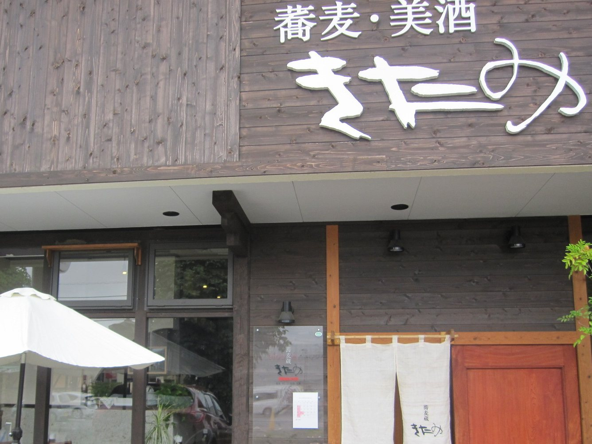
蕎麦・美酒
昼 11:30〜14:30／夜 18:00〜22:00・月曜定休
臨時のお休みは Instagram で → 0285-28-7110｜ご予約はこちらお電話は営業時間内にお願いいたします。
ガレットは、1枚ずつ焼き上げますので、お時間をいただきます。
お蕎麦は、最初から最後まで機械を使わず、毎朝手で打っております。蕎麦粉は季節ごとに替わり、その日の温度や湿度で粉の様子も変わりますので、手で確かめながら、納得のいくお蕎麦に仕上げてお出しします。冷たいお蕎麦は、美味しく召し上がっていただくため大盛りを控えております。もう少し、というときは、おかわり蕎麦をお申し付けください。
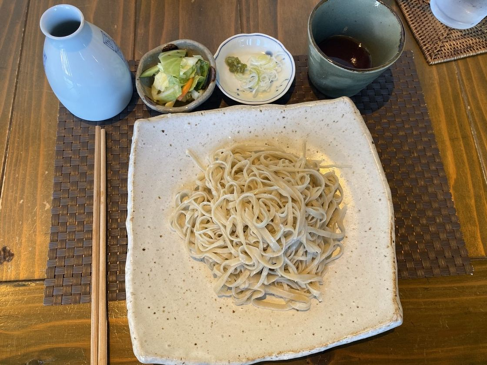
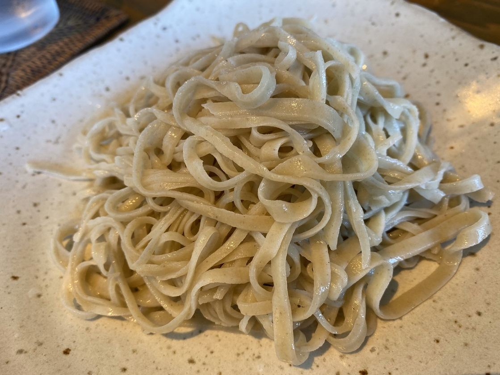
蕎麦粉は、お蕎麦にも、ガレットにも使っております。お食事のガレットと、甘いガレットをご用意しており、ミニ蕎麦とお飲みものを添えたセットもございます。
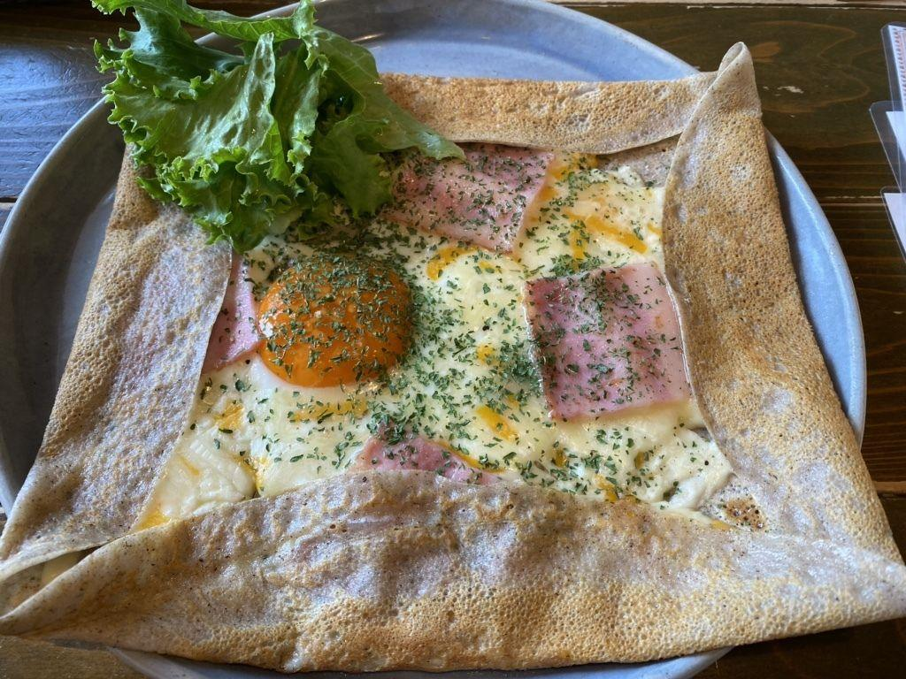
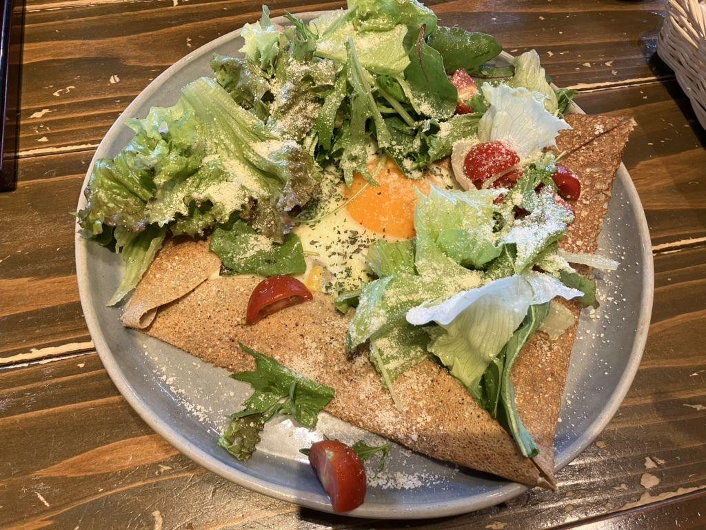
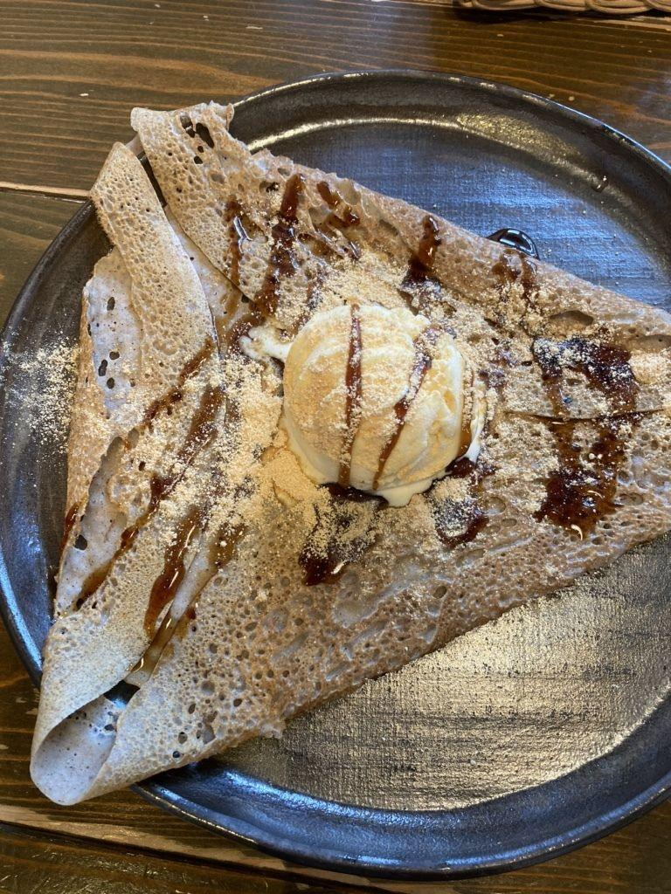
夜は、お酒と酒肴でごゆっくりお過ごしください。日替わりのおすすめと、ウイスキー・日本酒の銘柄は、ブラックボードに掲げております。ジャズの流れる店内で、締めのお蕎麦までお楽しみください。
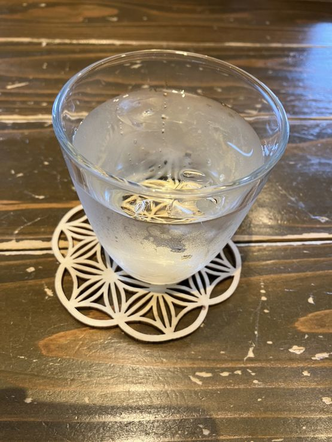
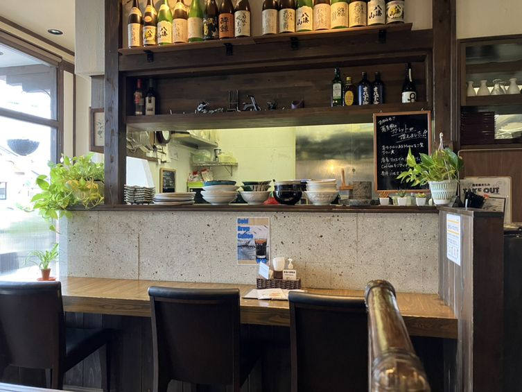
昼はお蕎麦を、夜はお酒を。おひとりでも、お連れさまとでも、落ち着いてお過ごしいただけるよう、カウンターとテーブルをご用意しております。
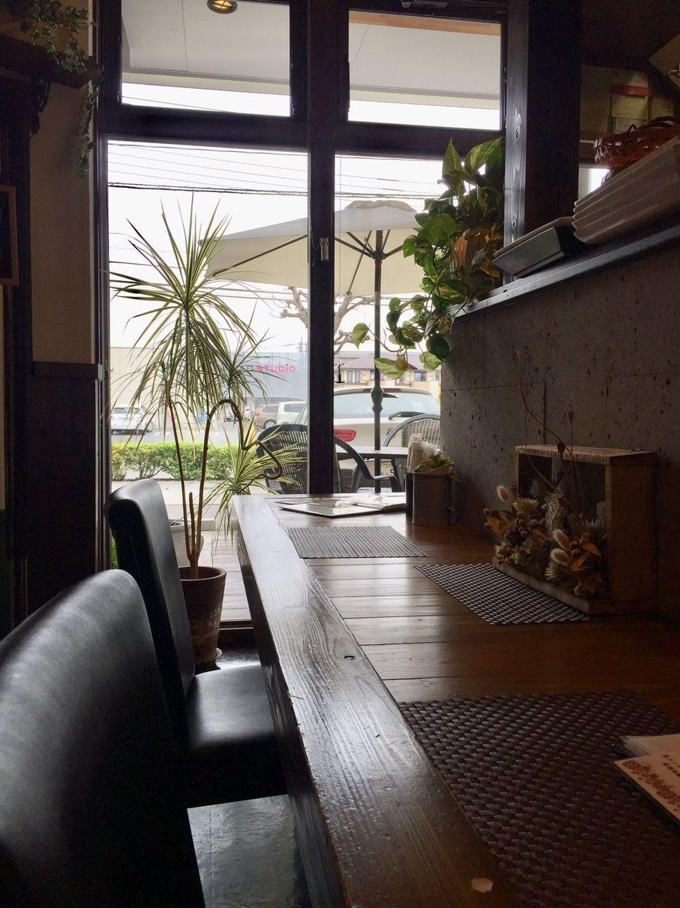
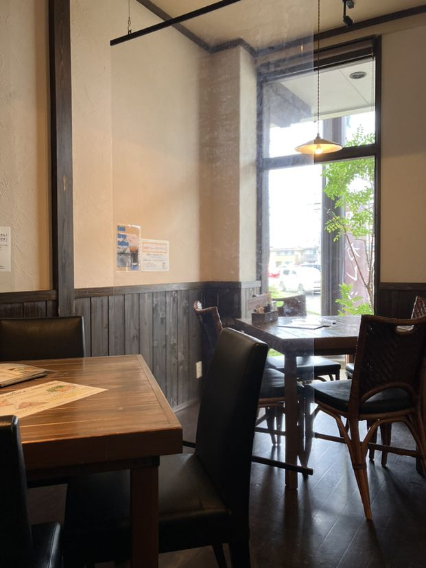
「蕎麦は更科系の白く細めの麺であり、つゆは栃木県に多い醤油感の強めタイプではなく、かえしの風味がよい」
お客様の声より・2024年12月
「ガレットは茄子がたっぷりで、本当にごろごろ入ってる‼バジルの良い香りが食欲を刺激。カリっと焼かれたガレットのパリッとした食感と、チーズが触れてる部分はもっちり。卵黄を崩しつつ美味しくペロリでした☆」
お客様の声より・2025年4月
「美味しかったです！お店も綺麗でまた行きたいです！」
お客様の声より・2026年7月
ご予約はお電話で承ります。月曜日のほかのお休みは、毎月Instagramでお知らせしておりますので、お出かけの前にご覧ください。
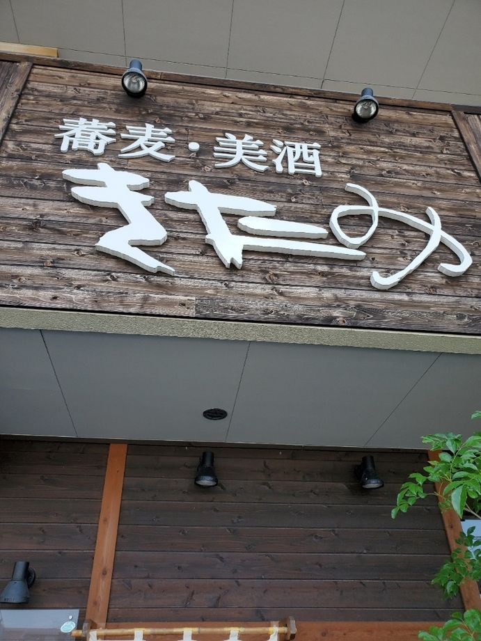
| 住所 | 〒323-0820 栃木県小山市西城南4-3-1 ピーチプラザ1F |
|---|---|
| アクセス | 小山駅より車で10分。小山城南郵便局の交差点を西へ約200m先、左側です（向かいにコメダ珈琲 小山店がございます）。 |
| 電話 | 0285-28-7110 |
| 営業時間 | 昼 11:30〜14:30（L.O. 14:00）／夜 18:00〜22:00（L.O. 21:00） |
| 定休日 | 月曜日（ほかに月に一度ほどお休みがございます。Instagram でお知らせしております） |
| 駐車場 | 店の前と、お隣の書店の駐車場をご利用いただけます |
| 店内 | 全席禁煙 |
お蕎麦が無くなり次第、早めに閉めることがございます。ご予約の状況により貸切営業の日もございます。お電話は営業時間内にお願いいたします。